图形面积是指一个图形表面所占地方的大小．在我们日常生活及生产实践中，常会遇到求一个平面图形的面积问题．有些简单的图形，比如长方形（包括正方形）、三角形、平行四边形、梯形、圆，这些图形的面积可直接用公式求出，但还存在着许多巧求面积的问题．求面积这类问题在小学竞赛中经常出现．然而竞赛中出现的图形各式各样，有时并非是一个规则图形，无法直接通过面积公式去计算，这时就要运用恰当的技巧，将其解答出来．
【解题技巧】
1．解法一：割补法，即运用割去和补上的方式将不规则的图形变成规则图形从而方便计算．
2．解法二：添加辅助线，即将一个不规则图形分割成一个个能够直接计算的规则图形或借添辅助线获得图形中更多的数量关系来解题．
【基本公式】
常见规则图形面积公式见下表
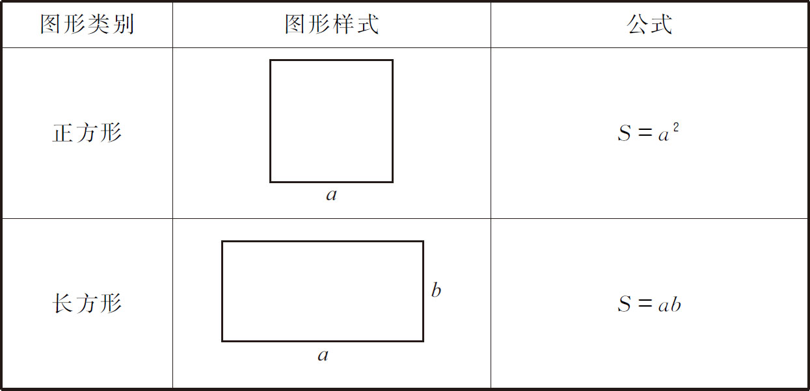
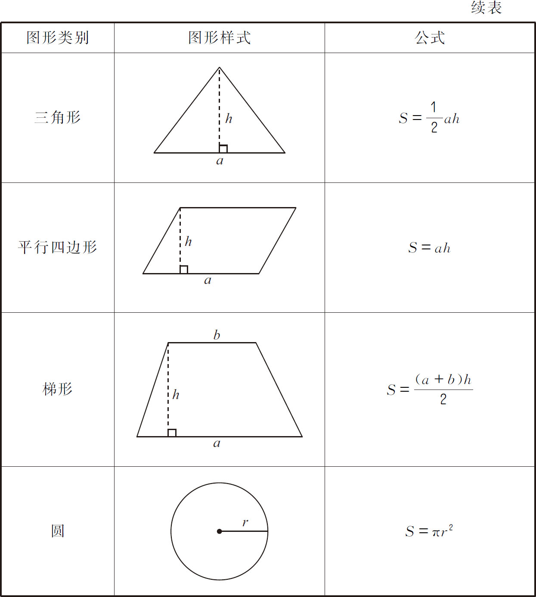
如图所示，将边长为4分米的正方形纸板剪成一副“七巧板”（图①），用它拼成一座“小桥”（图②），那么“小桥”中阴影部分的面积是___平方分米．
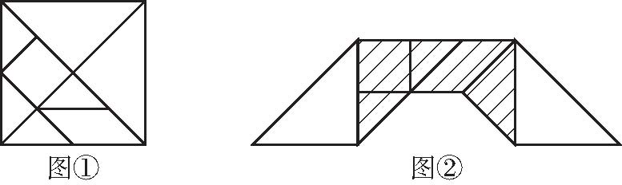
【答案】 8．
【解析】 观察图形可知，阴影部分的面积等于正方形的面积减去两个大等腰直角三角形的面积，因此阴影部分的面积等于正方形面积的一半，即4×4÷2＝16÷2＝8（平方分米）．
【举一反三1】
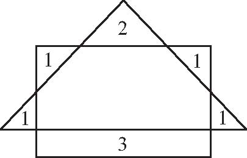
（第五届“走美杯”决赛）一个长方形和一个等腰三角形如图所示放置，图中六块的面积分别为1、1、1、1、2、3．大长方形的面积是____．
如图所示，正方形ABCD 的边长为6，A E＝1.5，C F＝2．那么长方形EFGH 的面积为___．
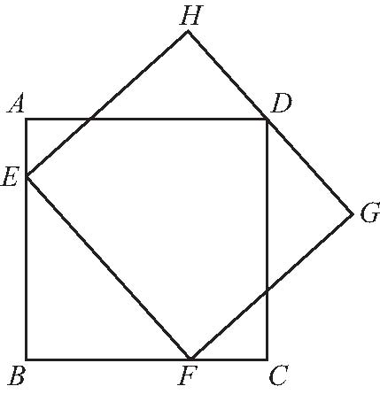
【答案】 33．
【解析】 连接ED、FD ．三角形AED 的面积＝6×1.5÷2＝4.5，三角形DFC 的面积＝6×2÷2＝6，三角形EBF 的面积＝（6-1.5）×（6-2）÷2＝9，所以三角形EDF 的面积＝36-4.5-6-9＝16.5，长方形EFHG 的面积等于三角形EDF 的面积的两倍，即16.5×2＝33．
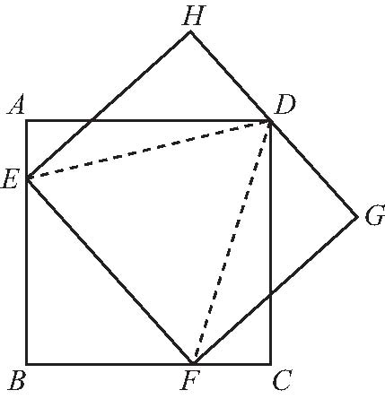
【举一反三2】
（第十七届“华杯赛”初赛）正方形A B C D 的面积为9平方厘米，正方形EFGH 的面积为64平方厘米．如图所示，边B C 落在EH上．已知三角形A CG 的面积为6.75平方厘米，则三角形A B E的面积为____平方厘米．
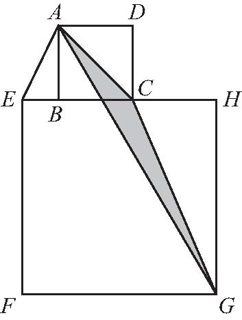
（第八届“希望杯”培训题）如图所示，正方形的四个顶点在圆上，两块阴影部分的面积之和是128.5平方厘米，差是71.5平方厘米．求圆的面积．
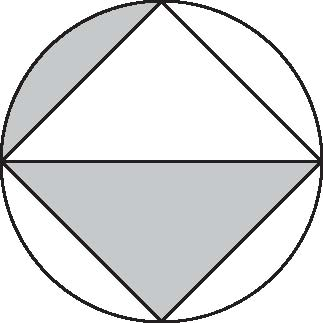
【答案】 314平方厘米．
【解析】 下面阴影部分的面积为（128.5＋71.5）÷2＝200÷2＝100（平方厘米），上面阴影部分的面积为128.5-100＝28.5（平方厘米），圆的面积为100×2＋28.5×4＝200＋114＝314（平方厘米）．
【举一反三3】
（第五届“走美杯”初赛）如图所示，正方形A B C D 的边长为6厘米，
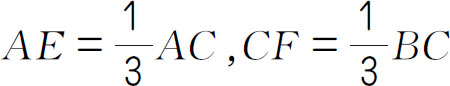
．三角形DEF的面积为多少平方厘米？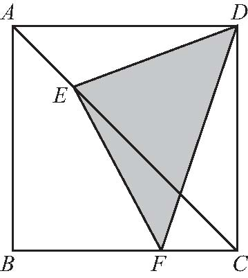
（第十一届“走美杯”初赛）如图所示，正方形A B C D 中，等腰直角三角形A EF 的面积是1，长方形EFGH 的面积是10，那么，正方形A B C D 的面积是多少？
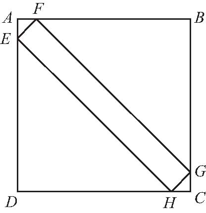
【答案】 24.5．
【解析】 因为三角形AEF 是等腰直角三角形，所以AF＝AE ．因为三角形AEF 面积为1，所以
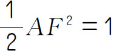
，所以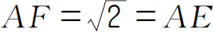
．在直角三角形AEF 中，由勾股定理得，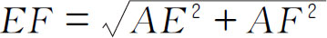
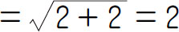
，所以FG ＝10÷2＝5．在等腰直角三角形BFG 中，由勾股定理得，2BF 2 ＝FG 2 ，即2BF 2 ＝52 ＝25，
所以
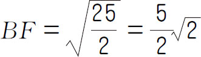
．所以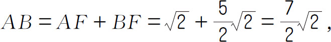
所以正方形ABCD 的面积是：
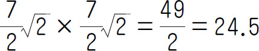
．【举一反三4】
（第十四届“中环杯”初赛）如图所示，一个棱长为12厘米的正方体被切了一刀，这刀是沿IJ 切入，从LK 切出，使得AI ＝DL ＝4厘米，JF ＝KG ＝3厘米，截面IJKL 为长方形．正方体被切成了两个部分，这两个部分的表面积之和为____平方厘米．
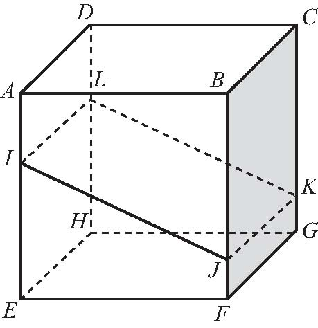
1．（第四届“华杯赛”决赛）图中图①和图②是两个形状、大小完全相同的大长方形，在每个大长方形内放入四个如图③所示的小长方形，阴影区域是空下来的地方．已知大长方形的长比宽多6厘米，问：图①和图②中阴影区域的周长哪个大？大多少？
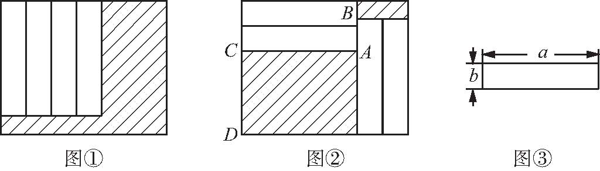
2．如图所示是一块长方形草地，长方形的长是16米，宽是10米，中间有两条宽2米的道路，一条是长方形，一条是平行四边形，那么有草部分（阴影部分）的面积有多大？
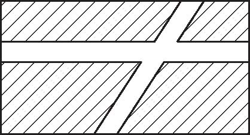
3．如图所示，正方形ABCD 的边长为12，P 是边A B 上的任意一点，M、N、I、H 分别是边B C 、AD 上的三等分点，E、F、G 是边CD 上的四等分点，图中阴影部分的面积是____．
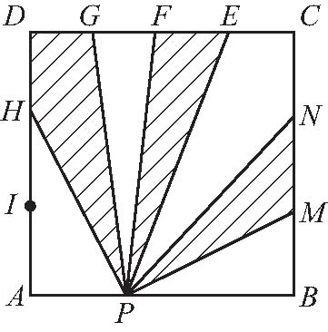
4．图中正六边形ABCDEF 的面积是54．AP ＝2PF ，CQ ＝2BQ ，求阴影部分四边形CEPQ 的面积．
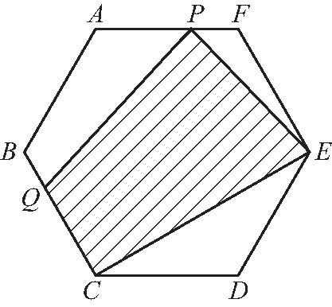
5．（第十一届“希望杯”初赛）如图所示，5个等腰直角三角形叠放在一起，它们的斜边都在一条直线上，已知最小的等腰直角三角形的斜边长是4厘米，其余等腰三角形的斜边依次多4厘米，则图中阴影部分的面积是____平方厘米．
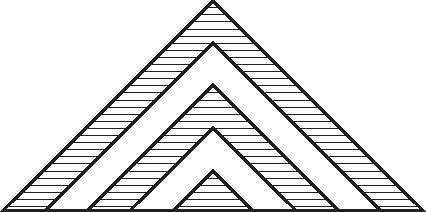
6．如图所示，正方形边长为2厘米，两阴影部分面积相差多少平方厘米？
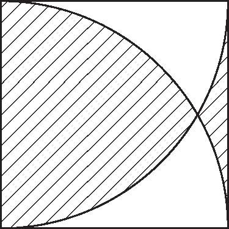